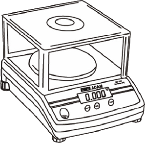
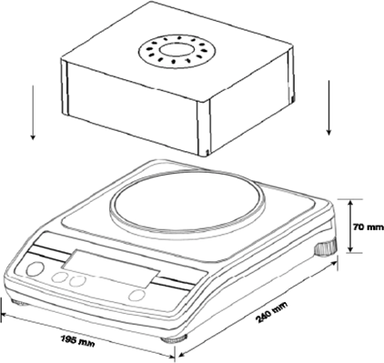
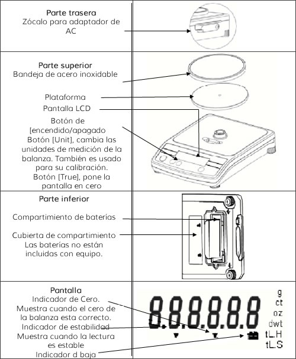
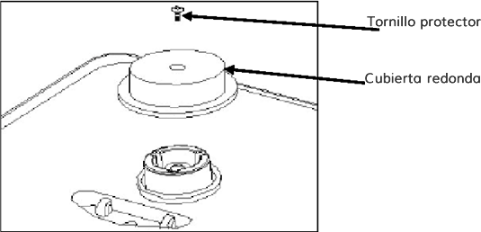

LDM
Manual de Operación de la Balanza

La serie AQT esta constituida por un amplio rango de balanzas adaptadas para cubrir una gran variedad de aplicaciones. Sus principales características son las siguientes:
Funcionan con baterías o una fuente de alimentación CA.
Función de auto apagado para ahorrar energía.
Indicador de batería baja.
Peso neto / indicador de estabilidad.
Autoajuste del cero.
Disponibles en una gran variedad de unidades de medición.
Soporte de seguridad integral.
Nivel de alcohol para nivelación.
Pantalla LCD (6 dígitos 15 mm de altura).
Modo automático de luz de fondo.
Protector como estándar en todos los modelos.
Amplia bandeja de acero inoxidable.
Modo de auto calibración usando el teclado.

MODELO |
AQT-200 |
AQT-250 |
AQT-600 |
AQT-1500 |
AQT-2600 |
AQT-2000 |
AQT-5000 |
Capacidad Máxima |
200g |
250g |
600g |
1500g |
2600g |
2000g |
5000g |
|
0.01g |
0.1g |
0.1g |
0.1g |
0.1g |
0.1g |
0.1g |
Resolución |
1:20,000 |
1:2500 |
1:6000 |
1:15,000 |
1:26,000 |
1:2000 |
1:5000 |
Repetitividad |
0.02g |
0.1g |
0.1g |
0.2g |
0.2g |
1g |
1g |
Linealidad ± |
0.02g |
0.1g |
0.1g |
0.2g |
0.2g |
1g |
1g |
Unidades de medida |
g/ ct/ oz |
g/ vt/ oz/ dwt |
kg/ g/ lb/ oz |
||||
Tiempo de estabilización |
3 segundos |
2 segundos |
3 segundos |
2 segundos |
|||
Temperatura de operación |
0 °C a 40 °C |
||||||
Alimentación |
Adaptador de 12 VCA @ 150 mA; o 6 pilas AA |
||||||
Calibración |
Presione el botón de calibración para usar una masa externa |
||||||
Masas de calibración |
200g |
250g |
600g |
1500g |
2000g |
2000g |
5000g |
Pantalla |
LCD de 6 dígitos, 15 mm, con luz |
||||||
Cubre polvo |
180 * 158 * 82 mm |
||||||
Cubierta para balanza |
Plástico ABS |
||||||
Tamaño de la bandeja |
130 mm de diámetro (5.1”) |
||||||
Dimensiones externas |
195 * 240 * 70 mm |
||||||
Peso neto |
1.2 Kg. (2.6 lb.) |
||||||
Características |
Indicador de batería baja, indicador de estabilidad y de cero. |
||||||
Todos los mensajes están identificados por las siguientes palabras, "PELIGRO" y "PRECAUCION". Estas palabras significan lo siguiente:
PELIGRO |
Información importante para prevenirlo acerca de una situación que puede causarle lesiones serias y/o daños materiales si las indicaciones no son acatadas. |
PRECAUCIÓN |
Información importante que le dice el como prevenir daños en el equipo. |
Cuando use la balanza, las instrucciones de seguridad no deben ser pasadas por alto.
PELIGRO Use el adaptador CA diseñado por el fabricante de la balanza. Otros adaptadores pueden provocar daños en el equipo.
PRECAUCION
- Evite instalar la balanza directamente bajo la luz del sol ya que esto puede provocar un mal funcionamiento del equipo o una disminución de su rendimiento.
- No mezcle diferentes tipos de baterías. Reemplace todas las baterías al mismo tiempo.
- Si la balanza no va a ser usada por un largo periodo de tiempo, remueva todas las baterías del compartimiento para evitar derrames que puedan dañar al equipo.
- Evite sobrecargar o dejar caer material sobre la plataforma, ya que esto puede dañar la balanza.
- No derrame líquidos sobre la balanza ya que el equipo no es resistente al agua. Los líquidos pueden provocar daños en la cubierta y si el líquido llega al interior de la balanza, puede provocar daños en los componentes electrónicos.
- Materiales con carga electrostática pueden influir en las mediciones. Si es posible, descargue la electricidad estática de las muestras. Otra solución al problema es cubrir ambos lados de la bandeja y la parte superior de la cubierta con un agente antiestático.

1. Instalación de la balanza
PRECAUCION
- Evite instalar la balanza directamente bajo la luz del sol, esto puede provocar un mal funcionamiento del equipo o bajo rendimiento.
- Coloque la balanza en una mesa firme y nivelada. La balanza presentara una menor exactitud si no se encuentra en una superficie nivelada.
- Nivele la balanza ajustando los soportes del equipo, hasta centrar la burbuja dentro del nivel de alcohol.
- Retire el tornillo protector y la cubierta redonda, como se muestra en la figura, con ayuda de la llave Allen incluida en el empaque. (Es recomendable que conserve el tornillo protector y la cubierta redonda junto con la caja de empaque para usarlos en futuras mudanzas).
- Coloque la plataforma (empacada por separado) en los receptáculos de la cubierta superior. Coloque la bandeja de acero inoxidable (consulte el diagrama de la pagina anterior).
- No empuje con fuerza excesiva, ya que puede dañar la celda de carga en el interior.
- Coloque la balanza sobre una superficie plana y firme para lograr mediciones exactas.

2. Instalación de las baterías y la fuente de alimentación
Quite la cubierta del compartimiento para baterías e inserte seis pilas (tamaño R6P / LR6 / AA). Tenga especial cuidado colocando las polaridades positiva y negativa correctamente.
Alternativamente, inserte el adaptador CA en el zócalo ubicado en la parte posterior de la balanza. Los requerimientos en la entrada CA pueden ser 100, 120, 220, 230 o 240 Volts (50/60 Hz) dependiendo del lugar donde será usada. Verifique que el adaptador es el correcto.
1. Antes de pesar
La balanza cuenta con una función de apagado automático, si esta función esta activada, el equipo se apagara después de dos minutos de inactividad.
2. Procedimientos de medición
- Presione el botón [ON/OFF] para encender la balanza.
- Cuando la balanza es encendida, se activaran todos los segmentos de la pantalla LCD durante unos cuantos segundos y finalmente la pantalla mostrara "0.00" junto con las ultimas unidades seleccionadas.
Selección de unidades de medida [Unit]
Presione el botón [Unit] para seleccionar las unidades de medida, por ejemplo "g" / "ct" / "oz" o "dwt". Una vez que las unidades hayan sido seleccionadas, el peso será mostrado en las unidades elegidas y el símbolo de las unidades será mostrado.
Empezar a pesar
Si no usa un contenedor para realizar sus mediciones
Verifique que la lectura es "0.00". Si no es así, presione la tecla [TARE] para mostrar el valor inicial de "0.00".
Coloque los objetos sobre la bandeja de la pesa.
Cuando la lectura obtenida sea estable, el indicador de estabilidad será desplegado.
Si utiliza un contenedor para realizar sus mediciones
Coloque el envase vació sobre la bandeja.
Espere a que aparezca el indicador de estabilidad y presione la tecla [TARE].
Coloque los objetos que serán pesados dentro del contenedor.
Cuando la lectura se estabilice, el indicador de estabilidad aparecerá en la pantalla.
Solo es mostrado el peso neto.
1. Entre el modo de configuración
- Presione el botón [ON/OFF] para encender la balanza.
- Presione el botón [Tare] y sin dejar de oprimirlo presione el botón [ON/OFF]. La pantalla mostrara el siguiente mensaje, "A-On" o "A-OFF".
Selección del modo Auto-Apagado
- Cuando la pantalla muestre el mensaje "A-On" o "A-OFF" presione el botón [UNIT] para seleccionar el modo de ajuste para el apagado automático.
- Presione el botón [Tare] para elegir "encender" o "apagar"
- "A-On" Significa que la función de auto-apagado esta activada "A-OFF" Significa que esta función esta desactivada.
- Apague el equipo y después enciéndalo nuevamente para regresar al modo de balanza normal. La balanza se apaga después de aproximadamente 2 minutos de inactividad.
2.- Selección de nodo de luz de fondo
- Después presione el botón [Unit] para entrar a las opciones de configuración de luz. La pantalla mostrará uno de los siguientes letreros, "L-On" o "L-Off"
- Presione el botón [Tare] para elegir el modo "encendido" o "apagado".
- "L-On" significa que la función de iluminación esta encendida "L-Off" significa que esta función esta desactivada.
- Apague la balanza y después enciéndala nuevamente para entrar en el modo normal para realizar mediciones.
3.- Selección de unidades (solo para el modelo AQT 200)
- Posteriormente presione el botón [Unit] para entrar al modo de selección de unidades, en la pantalla se mostrara "On ct".
- Presione [Tare] para seleccionar "encendido" o "Apagado" On significa que las unidades de medida están activadas. Off significa que las unidades están deshabilitadas. Presione [Unit] para cambiar de unidades de medida. Las siguientes unidades de pesaje pueden ser elegidas secuencialmente.
Ct – oz – dwy – tL.H – tl.S – tL.T (Nota: g siempre esta activada).
- Apague la balanza y enciéndala nuevamente para regresar al modo normal de operación
NOTA: Es recomendable que la balanza sea utilizada en lugares bien iluminados para desactivar la iluminación de la balanza y así maximizar la vida útil de las baterías.
- La calibración puede ser necesaria cuando la balanza es instalada por primera vez o si es cambiada de lugar.
- Con el tiempo y el uso, pueden presentarse desviaciones mecánicas. Por lo que es recomendable que calibre la balanza cuando requiera una exactitud óptima o cuando observe desviaciones mecánicas durante un experimento o una carga de prueba.
- Antes de calibrar, es necesario que cuente con las pesas apropiadas de calibración. Los pesos deben ser conocidos con exactitud para la correcta calibración de la balanza.
Si no cuenta con las pesas apropiadas no intente realizar una calibración.
MODELO |
AQT-200 |
AQT-250 |
AQT-600 |
AQT-1500 |
AQT-2600 |
AQT-2000 |
AQT-5000 |
Peso de calibración |
100g |
200g |
500g |
1000g |
1000g |
1000g |
2000g |
1. Calibración automática
- Antes de entrar al modo de calibración, presiones el botón [On/Off], para encender la balanza por un minuto.
- Oprima el botón [On/Off] para apagar la balanza.
- Mantenga presionado el botón [Unit] y posteriormente oprima el botón [On/Off]. En la pantalla aparecerá el valor usado en la última calibración (por ejemplo. "L - 1000"), presione [Tare] para elegir de entre dos pesos de calibración. Cuando haya realizado la elección presione [Unit] y en la pantalla será desplegado el valor A/D.
Calibración
- Espere a que el indicador de estabilidad sea mostrado en la pantalla.
- Presione [Unit], la pantalla mostrara lo siguiente "00SAVE". Después de dos segundos, la pantalla regresara al valor A/D.
- Coloque la pesa requerida sobre la plataforma. El valor de la pesa es el que selecciono previamente.
- Una vez que haya aparecido el indicador de estabilidad presione el botón [Unit]
- En la pantalla aparecerá el siguiente letrero "00SAVE". En este punto la calibración esta completada.
- Presione [On/Off] para apagar la balanza y vuélvalo a oprimir para encender la balanza nuevamente.
- Coloque el máximo peso de calibración (por ejemplo, 2000g para el modelo AQT2000) sobre la plataforma para verificar que la medición es correcta. Si no lo es, realice nuevamente el procedimiento de calibración.
EEEEHI |
Sobrecarga |
EEEELO |
El valor A/D es demasiado pequeño |
|
|
Batería baja |
NOTA: Una calibración puede ser requerida antes de realizar un pesaje. Lea la sección 8 "CALIBRACIÓN", so desea realizar una exactitud óptima.
Si necesita ordenar cualquier pieza de repuesto o algún accesorio, contacte a su distribuidor o directamente a Adam Equipment. Una lista parcial de este tipo de partes es la siguiente:
- Adaptador
- Fuente de alimentación
- Cubierta
- Bandeja de acero inoxidable
El presente manual cubre los detalles de operación. Si tiene algún problema con la balanza, el cual no es referenciado en este manual, contacte a su proveedor para asistencia. Para obtener una mejor ayuda, el proveedor necesitara la siguiente información, la cual deberá estar lista:
Detalles de su compañía
Nombre de su empresa
Nombre del contacto
Teléfono del contacto, correo electrónico, fax o cualquier otra forma de contacto.
Detalles del equipo comprado
(Esta información siempre deberá estar disponible para cualquier futura correspondencia. Sugerimos llene esta forma tan pronto como el equipo sea recibido y mantenga una copia impresa en su registro para rápidas referencias)
Modelo de la balanza: |
|
Numero de serie del equipo: |
|
Numero de versión del Software |
|
Fecha de compra; |
|
Nombre del proveedor: |
|
Breve descripción del problema
Incluye el reciente historial de la unidad. Por ejemplo:
- A sido usada desde que fue comprada
- A estado en contacto con agua
- A sido dañada por fuego
- Tormentas eléctricas en el área
- Ha sido tirada al suelo, etc.
Declaración de conformidad del fabricante
Este producto a sido manufacturado de acuerdo con los estándares europeos armonizados, Siguiendo las condiciones de las directivas abajo mencionadas:
Directiva de compatibilidad electromagnética 89/336/EEC
Directiva de bajo voltaje 73/23/EEC
Conformidad FCC
Este equipo ha sido probado y cumple con los lineamientos para los dispositivos digitales de clase A, de acuerdo con la parte 15 de las reglas FCC. Estos lineamientos están diseñados para proveer protección razonable contra interferencias dañinas cuando el equipo es operado en entornos comerciales. El equipo genera, usa y puede irradiar ondas de radio frecuencia, si no es usado de acuerdo bajo las instrucciones contenidas en el manual, se pueden generar interferencias en cuyo caso, el usuario será el responsable de corregir dichas interferencias por sus propios medios.
Con este equipo deben ser usados cables de interconexión blindados para asegurar la conformidad con los lineamientos de emisiones RF que gobiernan este dispositivo.
Cualquier cambio o modificación no aprobada expresamente por Adam Equipment podría anular la autoridad del usuario para operar el equipo.